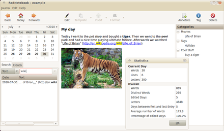

Version 1.0

RedNotebook 1.1 on Ubuntu |

RedNotebook 1.1 - Preview Mode |
|

Search & Statistics |
{kind=link}
What do others write about RedNotebook?
Detailed Review about RedNotebook 0.8.8 at simple-linux.com: Italiano, Francais, (translated English version)
- English:
- openalexandria.com (2010-10)
- frostclick.com (2010-10)
- ghacks.net (2010-09)
- blog.freedownloadscenter.com (2010-05)
- Screencast at softoxi.com (2010-05)
- linuxjournal.com (2010-03)
- ghacks.net (2010-02)
- sourceforge.net/blog (2010-01)
- senselessdisorder.blogspot.com (2009-12)
- amot.wordpress.com (2009-01)
- ficklegadget.blogspot.com (2009-07)
- Posts in the RedNotebook Forum
- Deutsch:
- ubuntublog.ch
- tuxtux.org (2009-10) (very nice German screencast about RedNotebook 0.8.7)
- charly-mr.blogspot.com (2010-06)
- Español:
- genbeta.com/freetos
- zonalinux.com.ar
- cubo2.net (2010-09)
- Portuguesa:
- cyaneus.net
- gutocarvalho.net
- ubuntued.info (2009-09)
- pplware.sapo.pt (2010-06)
- Svenska:
- Russian:
- insdom.narod.ru (2009-05)
- zenway.ru (2010-06)
- Chinese:
-
disandu.com (2010-08)